Code
library(rethinking)
library(dagitty)
library(tidyverse)library(rethinking)
library(dagitty)
library(tidyverse)Let’s look at some chimp data. There are four plates on a rectangular table. There is a right and a left lever. If one of the levers is pulled, the two plates on that side of the table are sent to their respective ends. One side of the table might have food only on the plate that will be delivered to the chimp pulling the lever. The other side might have both plates filled, delivering food to both the chimp pulling the lever as well as the one seated across the table. This would be the prosocial option. Let’s see what we can find as the interaction between condition (presence or absence of another animal) and option (which side would be the prosocial option).
data(chimpanzees)
d <- chimpanzeesWe are interested in estimating the interaction between prosoc_left, meaning that the prosocial option is the left lever, and conidition, a 1 if there is another chimp seated across the table.
The conventional way to do this would be to construct a linear interaction between the two variables, but that makes it hard to determine different priors. Instead, let’s build an index variable from 1 to 4. We can visualize it with the xtabs function:
d$treatment <- 1 + d$prosoc_left + 2*d$condition
xtabs(~ treatment + prosoc_left + condition, d), , condition = 0
prosoc_left
treatment 0 1
1 126 0
2 0 126
3 0 0
4 0 0
, , condition = 1
prosoc_left
treatment 0 1
1 0 0
2 0 0
3 126 0
4 0 126The model is of the form:
\[\begin{align} L &\sim \text{Binomial}(1,p_i)\\ \text{logit}(p_i) &= \alpha_{\text{ACTOR}[i]} + \beta_{\text{TREATMENT}[i]}\\ \alpha_j &\sim \text{to be determined}\\ \beta_k &\sim \text{to be determined}\\ \end{align}\]
We could of course defined \(L\) to be a simple Bernoulli since it only has one trial.
Before we actually dive into the full model, let’s try something simple to warm up our prior predictive juices:
\[\begin{align} L &\sim \text{Binomial}(1,p_i)\\ \text{logit}(p_i) &= \alpha\\ \alpha &\sim \text{Normal}(0,\omega)\\ \end{align}\]
Let’s choose \(\omega=10\) for our value:
m11.1 <- quap(alist(
pulled_left ~ dbinom(1, p),
logit(p) <- a,
a ~ dnorm(0,10)
), data=d)
prior <- extract.prior(m11.1, n=1e4)
p <- inv_logit(prior$a)
dens(p, adj=0.1)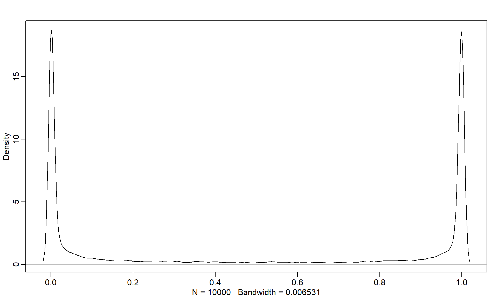
The model here is telling us that the chimp will almost never, or always pull the lever. There is no grey area. This implies that a flat prior in the logit space is not a flat prior in the outcome space. Let’s stick with \(\omega=1.5\) which will give us a much better behaved shape. Now, we could probably just use 1.5 again for \(\beta\), but let’s see what happens if we don’t:
m11.2 <- quap(alist(
pulled_left ~ dbinom(1, p),
logit(p) <- a + b[treatment],
a ~ dnorm(0,1.5),
b[treatment] ~ dnorm(0,10)
), data=d)
prior <- extract.prior(m11.2)
p <- lapply(1:4, \(x) inv_logit(prior$a + prior$b[,x])) |> as.data.frame()Let’s see what the priors imply about the prior differences between the treatments, since that is what we are really after.
dens(abs(p[,1] - p[,2]), adj=0.1)
Here the model thinks that the treatments are either completely alike, or completely different. Let’s try a 0.5 scale:
m11.3 <- quap(alist(
pulled_left ~ dbinom(1, p),
logit(p) <- a + b[treatment],
a ~ dnorm(0,1.5),
b[treatment] ~ dnorm(0,0.5)
), data=d)
prior <- extract.prior(m11.3)
p <- lapply(1:4, \(x) inv_logit(prior$a + prior$b[,x])) |> as.data.frame()
(p[,1] - p[,2]) |> abs() |> mean()[1] 0.09567778Now the average prior difference is about 10%. Extremely large differences are very unlikely now - this will help reduce overfitting.
Let’s go ahead and fit the model using HMC:
dat_list <- list(
pulled_left = d$pulled_left,
actor = d$actor,
treatment = d$treatment
)
m11.4 <- ulam(alist(
pulled_left ~ dbinom(1, p),
logit(p) <- a[actor] + b[treatment],
a[actor] ~ dnorm(0,1.5),
b[treatment] ~ dnorm(0, 0.5)
), data=dat_list, chains=4, log_lik=T)precis(m11.4, depth=2) mean sd 5.5% 94.5% rhat ess_bulk
a[1] -0.4640328 0.3294261 -0.99397196 0.06699429 1.007694 624.8181
a[2] 3.8823678 0.7503528 2.81642850 5.17131370 1.002282 1314.5949
a[3] -0.7643757 0.3429404 -1.31843440 -0.21115986 1.006265 585.9226
a[4] -0.7511400 0.3434110 -1.30305660 -0.20905960 1.005578 542.4115
a[5] -0.4544432 0.3318449 -0.97309533 0.05901739 1.005242 614.6827
a[6] 0.4709241 0.3393561 -0.08415782 1.00184380 1.004859 723.9353
a[7] 1.9503810 0.4316035 1.27983790 2.66879700 1.005830 831.1054
b[1] -0.0400770 0.2923804 -0.49397846 0.43193694 1.007118 566.5346
b[2] 0.4934814 0.2894652 0.03311294 0.95810253 1.007215 537.0348
b[3] -0.3792760 0.2918320 -0.85050965 0.08267004 1.009132 522.0213
b[4] 0.3798079 0.2901727 -0.08333671 0.85204792 1.007317 582.0832Let’s look at the chimps behavior on the outcome scale:
post <- extract.samples(m11.4)
p_left <- inv_logit(post$a)
plot(precis(as.data.frame(p_left)), xlim=c(0,1))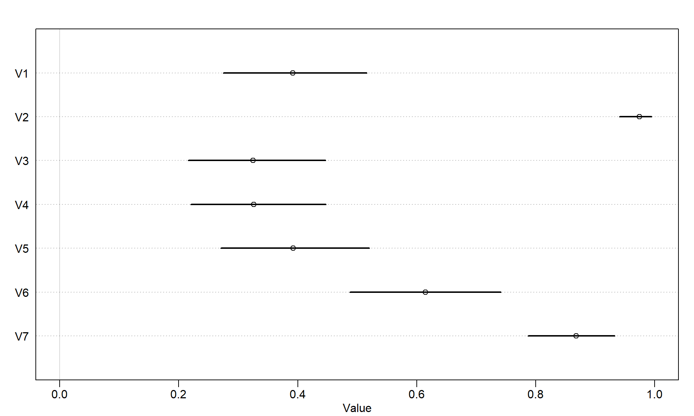
Now, let’s see how the treatments look:
labs <- c('R/N', 'L/N', 'R/P', 'L/P')
plot(precis(m11.4, depth=2, pars='b'), labels=labs)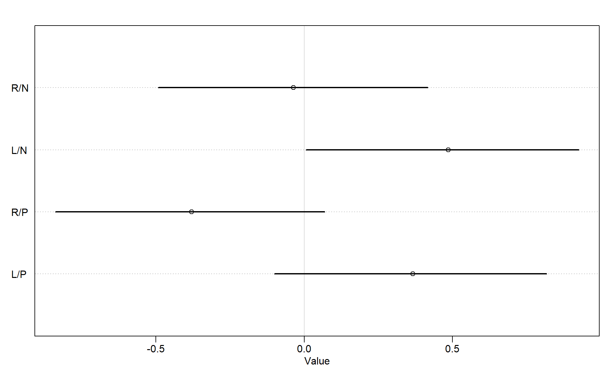
Here “R/N” means prosocial on right and no partner. What we want to see is if the chimp chose the prosocial option in the presence of a partner or not. For this we want to compare the difference between the first and third (top down), and second and fourth:
diffs <- list(
db13 = post$b[,1] - post$b[,3],
db24 = post$b[,2] - post$b[,4]
)
plot(precis(diffs))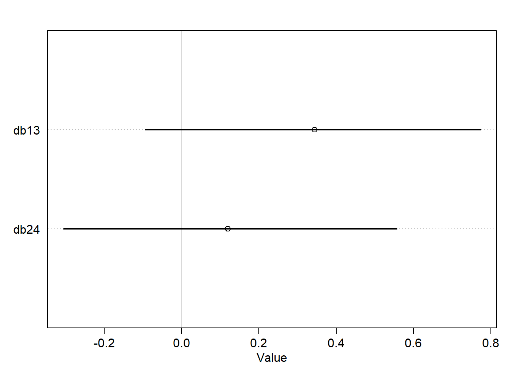
These are contrasts between no-partner/partner treatments on the log-odds scale. Clearly there isn’t any compelling evidence of prosocial choice in this experiment.
For our next inspection, let’s see how our posterior predictions faired against the actual data on the actor/treatment level:
pl <- by(d$pulled_left, list(d$actor, d$treatment), mean)
pl[,1] # average pulls by treatment for chimp 1 1 2 3 4 5 6 7
0.3333333 1.0000000 0.2777778 0.3333333 0.3333333 0.7777778 0.7777778 I won’t write out the whole code for visualizing, but you’ll see that we are pretty consistent with what the actual data shows. The big factor is handedness of the chimps.
Let’s try a simpler model where we don’t include an interaction - just the two separate variables that made up the interaction:
d$side <- d$prosoc_left + 1 # right 1, left 2
d$cond <- d$condition + 1 # no partner 1, partner 2dat_list2 <- list(
pulled_left=d$pulled_left,
actor = d$actor,
side = d$side,
cond = d$cond
)
m11.5 <- ulam(alist(
pulled_left ~ dbinom(1, p),
logit(p) <- a[actor] + bs[side] + bc[cond],
a[actor] ~ dnorm(0,1.5),
bs[side] ~ dnorm(0, 0.5),
bc[cond] ~ dnorm(0, 0.5)
), data=dat_list2, chains=4, log_lik=T, cores=4)compare(m11.5, m11.4, func=PSIS) PSIS SE dPSIS dSE pPSIS weight
m11.5 530.8195 19.02102 0.000000 NA 7.742572 0.7127731
m11.4 532.6372 19.00129 1.817782 1.202609 8.701061 0.2872269Just as we thought - the simpler model is actually better. This is because the model actually has more data and can better estimate the parameters separately instead of trying to force them together.
So far we have been talking about absolute effects: the difference a counter-factual change in a variable makes on the measurement scale. i.e. if we change the condition to be prosocial, we see the probability increase by 10 points. Now we are going to talk about the relative effects: the multiplier a change in effect has on the outcome. i.e. if we change the condition to be prosocial we double the outcome of an event. For example, the proportional odds of switching from treatment 2 to treatment 4 (adding a partner):
post <- extract.samples(m11.4)
mean(exp(post$b[,4] - post$b[,2]))[1] 0.9254744This means that the switch multiples the odds of pulling the left lever by 0.92. A 8% reduction in odds (this is proportional odds). Clearly, this is not enough though. If the other variables in the model make the outcome unlikely, ten a large proportional odds like 5x would not make the outcome likely.
There is nothing stopping us from doing a aggregated count model instead sice there is no need to preserve order. This can actually make things much faster since there is less data:
d_aggregated <- aggregate(
d$pulled_left,
list(treatment=d$treatment,
actor=d$actor,
side=d$side,
cond=d$cond),
sum
)
colnames(d_aggregated)[5] <- 'left_pulls'
d_aggregated |> head() treatment actor side cond left_pulls
1 1 1 1 1 6
2 1 2 1 1 18
3 1 3 1 1 5
4 1 4 1 1 6
5 1 5 1 1 6
6 1 6 1 1 14library(tidyverse)
d %>% group_by(treatment, actor, side, cond) %>% summarise(left_pulls=sum(pulled_left), cnt=n())`summarise()` has grouped output by 'treatment', 'actor', 'side'. You can
override using the `.groups` argument.# A tibble: 28 × 6
# Groups: treatment, actor, side [28]
treatment actor side cond left_pulls cnt
<dbl> <int> <dbl> <dbl> <int> <int>
1 1 1 1 1 6 18
2 1 2 1 1 18 18
3 1 3 1 1 5 18
4 1 4 1 1 6 18
5 1 5 1 1 6 18
6 1 6 1 1 14 18
7 1 7 1 1 14 18
8 2 1 2 1 9 18
9 2 2 2 1 18 18
10 2 3 2 1 11 18
# ℹ 18 more rowsSomething that is very important to note is that there were exactly 18 trials for each chimp and set of conditions. If they were different, we would have to change \(N\) for each point (not hard to do though).
Let’s fit the full model:
m11.6 <- ulam(alist(
left_pulls ~ dbinom(18, p),
logit(p) <- a[actor] + b[treatment],
a[actor] ~ dnorm(0, 1.5),
b[treatment] ~ dnorm(0,1.5)
), data=as.list(d_aggregated), chains=4, cores=4, log_lik=T)And compare to the identical model m11.4:
compare(m11.4, m11.6, func=PSIS)Warning in compare(m11.4, m11.6, func = PSIS): Different numbers of observations found for at least two models.
Model comparison is valid only for models fit to exactly the same observations.
Number of observations for each model:
m11.4 504
m11.6 28 Some Pareto k values are high (>0.5). Set pointwise=TRUE to inspect individual points. PSIS SE dPSIS dSE pPSIS weight
m11.6 114.8420 8.684858 0.0000 NA 8.905914 1.000000e+00
m11.4 532.6372 19.001292 417.7953 41.30645 8.701061 1.891969e-91The PSIS scores are very different. The main reason is that the probabilities are a lot higher for the aggregate model. This makes sense, the binomial probability takes into account all the different ways that x out of 18 trials can occur. That is taken into account by the binomial coefficient.
You’ll also notice that we got \(\hat{k}\) warnings. This is because we really aren’t doing LOO-CV anymore. We can be leaving up to 18 points out since the weights are calculated at the \((\text{treatment}, \text{actor})\) level. So leaving one out is really like leaving 18 points out. Much more likely for things to be influential in the total model.
Let’s now switch to a instance where we don’t have the same number of trials per data point:
data(UCBadmit)
d <- UCBadmitWe want to model the probability of acceptance given an applicants gender:
\[\begin{align} A &\sim \text{Binomial}(N_i,p_i)\\ \text{logit}(p_i) &= \alpha_{\text{GID[i]}}\\ \alpha_j &\sim \text{Normal}(0,1.5)\\ \end{align}\]
dat_list <- list(
admit = d$admit,
applications = d$applications,
gid = ifelse(d$applicant.gender == 'male', 1, 2)
)
m11.7 <- ulam(alist(
admit ~ dbinom(applications, p),
logit(p) <- a[gid],
a[gid] ~ dnorm(0,1.5)
), data=dat_list, chains=4, cores=4)precis(m11.7, depth=2) mean sd 5.5% 94.5% rhat ess_bulk
a[1] -0.2194016 0.03977851 -0.2824417 -0.1543282 1.000159 1182.041
a[2] -0.8296256 0.05082731 -0.9078748 -0.7491444 1.004450 1175.208Let’s now calculate the contrast between male and female applicants. We will calculate it on the relative and absolute scale:
post <- extract.samples(m11.7)
diff_a <- post$a[,1] - post$a[,2]
diff_p <- inv_logit(post$a[,1]) - inv_logit(post$a[,2])
precis(list(diff_a=diff_a, diff_p=diff_p)) mean sd 5.5% 94.5% histogram
diff_a 0.6102240 0.0626899 0.5098874 0.7086794 ▁▁▁▃▇▇▃▂▁
diff_p 0.1415584 0.0141332 0.1188481 0.1639834 ▁▁▁▁▃▇▇▅▂▁▁Recall that diff_a is giving us the difference on the log-odds scale, while diff_p is on the absolute scale. So it looks like that being male gives students a 14% higher on average acceptance rate.
Let’s plot some posterior predictive checks:
postcheck(m11.7)
for (i in 1:6){
x <- 1 + 2*(i-1)
y1 <- d$admit[x]/d$applications[x]
y2 <- d$admit[x+1]/d$applications[x+1]
lines(c(x, x+1), c(y1,y2), col=rangi2, lwd=2)
text(x + 0.5, (y1 + y2)/2 + 0.05, d$dept[x], cex=0.8, col=rangi2)
}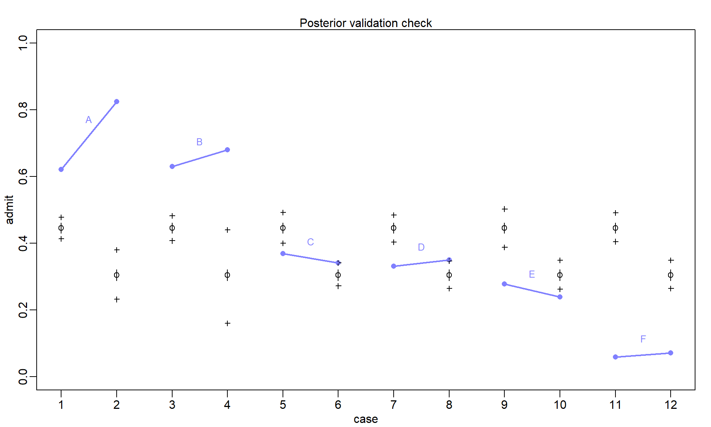
The vertical lines are the 89% CI for the expected value. The crosses are the 89% simulated samples, and the open points are the posterior mean.
You’ll notice that it isn’t actually the case that male acceptance is higher than female. That is only the case for departments C and E. This is of course a case of Simpson’s Paradox. Women are more likely to apply to departments with lower admission rates like department F:
d %>% group_by(dept) %>% summarise(
overall_acceptance = sum(admit) / sum(applications),
perc_female = sum(ifelse(applicant.gender=='female', applications,0))/sum(applications))# A tibble: 6 × 3
dept overall_acceptance perc_female
<fct> <dbl> <dbl>
1 A 0.644 0.116
2 B 0.632 0.0427
3 C 0.351 0.646
4 D 0.340 0.473
5 E 0.252 0.673
6 F 0.0644 0.478 Let’s now fit a model that models the variation between male and female within departments.
dat_list$dept_id <- rep(1:6, each=2)
m11.8 <- ulam(alist(
admit ~ dbinom(applications, p),
logit(p) <- a[gid] + delta[dept_id],
a[gid] ~ dnorm(0,1.5),
delta[dept_id] ~ dnorm(0,1.5)
), data=dat_list, chains=4, cores=4)precis(m11.8, depth=2) mean sd 5.5% 94.5% rhat ess_bulk
a[1] -0.59594918 0.5680758 -1.5483165 0.3871614 1.037367 97.86121
a[2] -0.50014887 0.5736022 -1.4299653 0.4828115 1.037141 102.13404
delta[1] 1.17482007 0.5721352 0.1906398 2.1248605 1.036177 104.45630
delta[2] 1.12940878 0.5728325 0.1534840 2.0412100 1.036488 105.31133
delta[3] -0.08218244 0.5745452 -1.0613944 0.8674434 1.036653 100.63552
delta[4] -0.11485671 0.5730780 -1.1189938 0.8428667 1.036950 98.36651
delta[5] -0.56036854 0.5782627 -1.5440778 0.3717220 1.036610 109.10481
delta[6] -2.11717838 0.5824360 -3.1186261 -1.2107651 1.036415 109.46618post <- extract.samples(m11.8)
diff_a <- post$a[,1] - post$a[,2]
diff_p <- inv_logit(post$a[,1]) - inv_logit(post$a[,2])
precis(list(diff_a=diff_a, diff_p=diff_p)) mean sd 5.5% 94.5% histogram
diff_a -0.09580032 0.08187207 -0.22847179 0.038360685 ▁▁▁▂▃▇▇▃▂▁▁▁
diff_p -0.02101334 0.01849849 -0.05143061 0.008110272 ▁▁▁▁▁▂▅▇▇▃▂▁▁▁▁We now see that male applicants might have it worse. But this of course is not a significant effect.
Let’s make a DAG showing our causal graph:
library(dagitty)
dag_m8.1 <- dagitty("dag{
G -> D -> A
G -> A
}")
coordinates(dag_m8.1) <- list(x=c('A'=1, 'G'=0, 'D'=0.5),
y=c('A'=0, 'G'=0, 'D'=-1))
drawdag(dag_m8.1)Notice there is an indirect causal path \(G \rightarrow D \rightarrow A\), from gender to acceptance. So we need to condition on \(D\) and close the path, which is what model m11.8 did.
Recall though, there might be a confounder \(U\):
dag_m8.1 <- dagitty("dag{
U [unobserved]
G -> D -> A
G -> A
D <- U -> A
}")
coordinates(dag_m8.1) <- list(x=c('A'=1, 'G'=0, 'D'=0.5, 'U'=1),
y=c('A'=0, 'G'=0, 'D'=-1, 'U' = -1))
drawdag(dag_m8.1)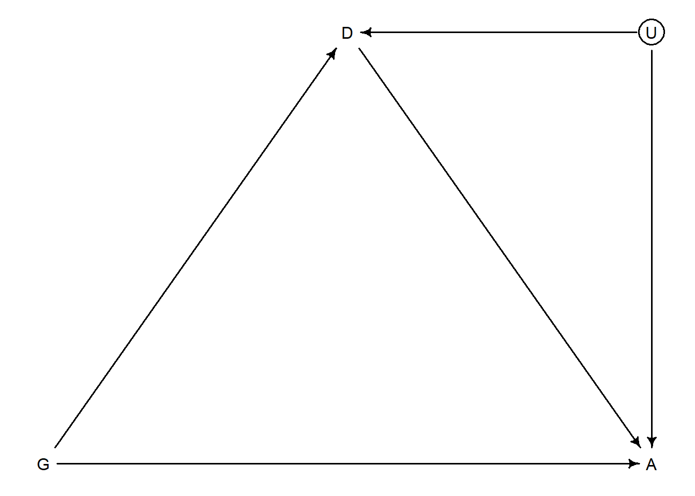
If we condition on \(D\), we actually would have \(D\) as a collider and open up the non-causal path \(G \rightarrow D \leftarrow U \rightarrow A\).
Going back to model m11.8, it is technically overparameterized. This of course is not a big issue for Bayesian models, so long as we have an adequate sampler that can handle the high correlations. It might be more efficient to instead to use a single parameter that represents the difference between male and female. Richard argues though that this will make one group more uncertain than the other. This of course works itself out on the outcome scale though.
Let’s look at the skeleton of a Poisson model:
\[\begin{align} y_i &\sim \text{Poisson}(\lambda_i)\\ \log(\lambda_i) &= \alpha + \beta (x_i - \bar{x})\\ \end{align}\]
The data we will start with is that of Oceanic societies and their number of distinct tools:
data("Kline")
d <- Kline
d culture population contact total_tools mean_TU
1 Malekula 1100 low 13 3.2
2 Tikopia 1500 low 22 4.7
3 Santa Cruz 3600 low 24 4.0
4 Yap 4791 high 43 5.0
5 Lau Fiji 7400 high 33 5.0
6 Trobriand 8000 high 19 4.0
7 Chuuk 9200 high 40 3.8
8 Manus 13000 low 28 6.6
9 Tonga 17500 high 55 5.4
10 Hawaii 275000 low 71 6.6Let’s look at some the assumptions we would like to bake into our model that predicts total_tools:
d$P <- d$population |> log() |> scale()
d$contact_id <- ifelse(d$contact == 'high', 2, 1)\[\begin{align} T_i &\sim \text{Poisson}(\lambda_i)\\ \log(\lambda_i) &= \alpha_{\text{CID[i]}} + \beta_{\text{CID[i]}} \log P_i\\ \alpha_j &\sim \text{To be determined} \\ \beta_j &\sim \text{To be determined} \\ \end{align}\]
Let’s first try to sniff out the correct priors. We know that \(\lambda\) has to be positive, so any prior we put on \(\alpha\) will be exponentiated. So if we choose a normal prior with \(\sigma=10\), then \(\lambda\) we have a lognormal outcome.
curve(dlnorm(x, 0, 10), 0, 100, n=200)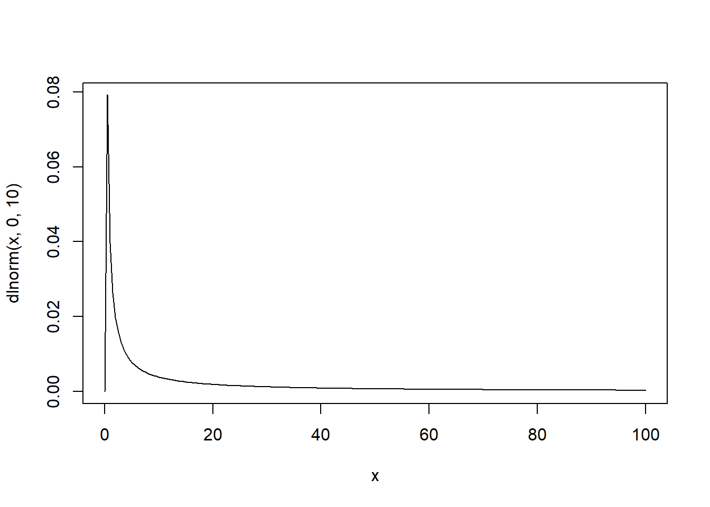
Now, this tail is very long. So long in fact that the mean of the distribution above is:
mean(rlnorm(1e4, 0,10))[1] 7.696734e+14Something to keep in mind is that the log link puts all the negative between 0 and 1 on the outcome scale. That means that if half of our prior mass is below 0, then half of the outcome will be between 0 and 1.
Let’s instead try something a bit more sensible:
curve(dlnorm(x, 3, 0.5), 0, 100, n=200)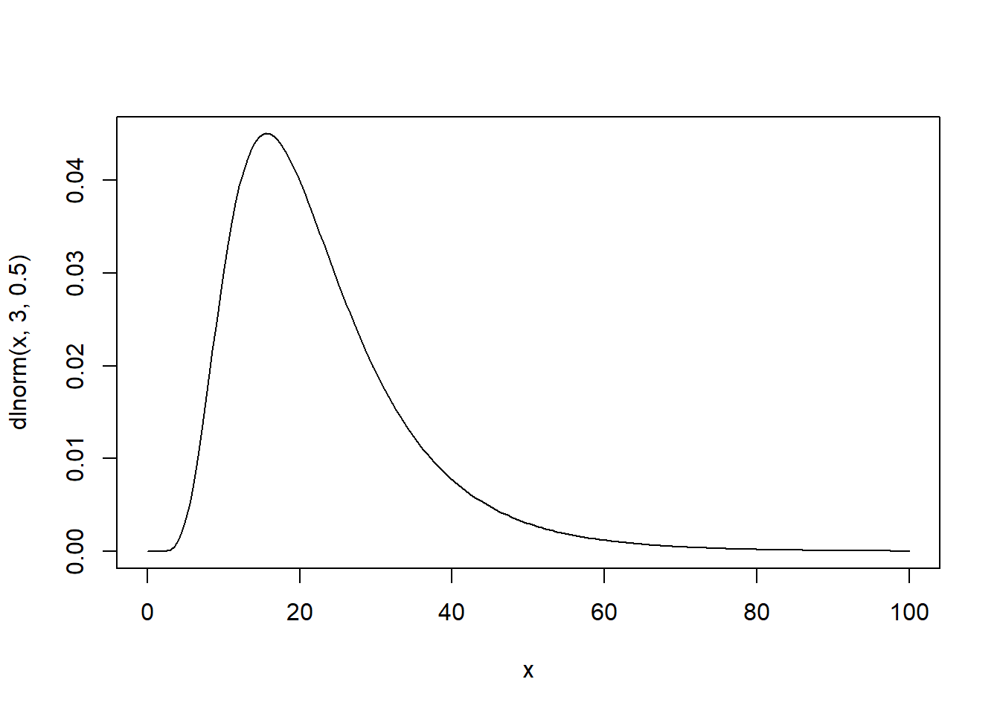
mean(rlnorm(1e5, 3, 0.5)) |> print()[1] 22.7135We now need to come up with something sensible for \(\beta\). Let’s again try \(N(0,10)\) and see what happens to the outcome:
N <- 100
a <- rnorm(N, 3, 0.5)
b <- rnorm(N, 0, 10)
plot(NULL, xlim=c(-2,2), ylim=c(0,100))
for (i in 1:N) curve(exp(a[i] + b[i]*x), add=T, col=grau(), xlab='x')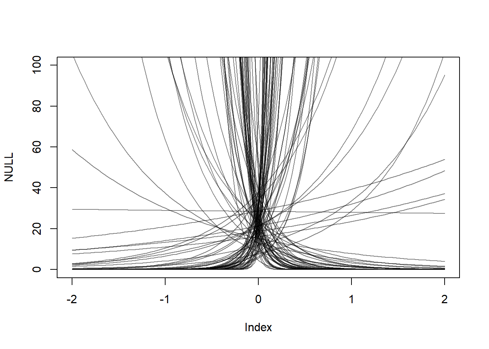
The pivoting around 0 is just the mean outcome for the average log population (approx. 22). What’s interesting is that model thinks that just above or below the mean the outcome variable either goes to zero or blows up! Nothing in-between.
Something better might be:
N <- 100
a <- rnorm(N, 3, 0.5)
b <- rnorm(N, 0, 0.2)
plot(NULL, xlim=c(-2,2), ylim=c(0,100))
for (i in 1:N) curve(exp(a[i] + b[i]*x), add=T, col=grau(), xlab='x')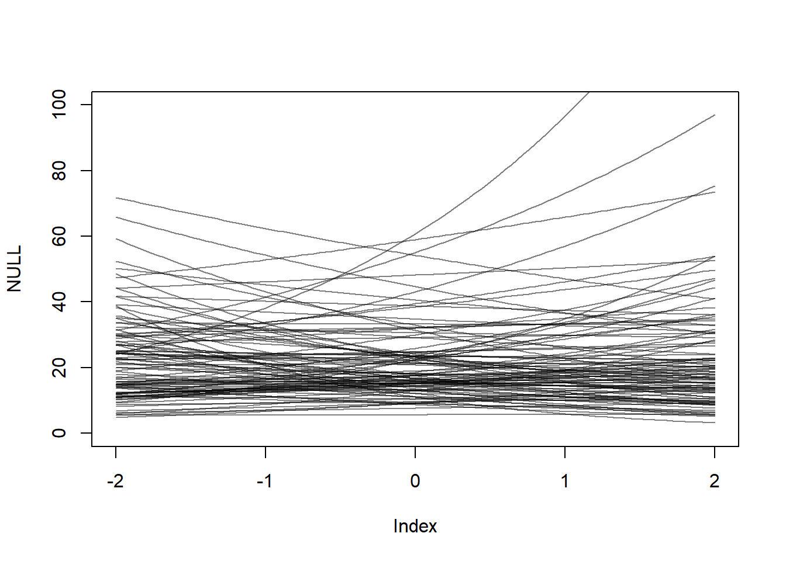
Hmm, a little too tight. Almost on relationship now between log population and tools.
Let’s look at this a different way - instead of the z-score, let’s keep population unstandardized:
par(mfrow=c(1,2))
x_seq <- seq(log(100), log(2e5), length.out=105)
lambda <- vapply(x_seq, \(x) exp(a + b*x), numeric(N))
plot(NULL, xlim=range(x_seq), ylim=range(lambda), xlab='log pop', ylab='total tools')
for (i in 1:N) lines(x_seq, lambda[i,], col=grau(), lwd=1.5)
plot(NULL, xlim=range(exp(x_seq)), ylim=range(lambda), xlab='Population', ylab='total tools')
for (i in 1:N) lines(exp(x_seq), lambda[i,], col=grau(), lwd=1.5)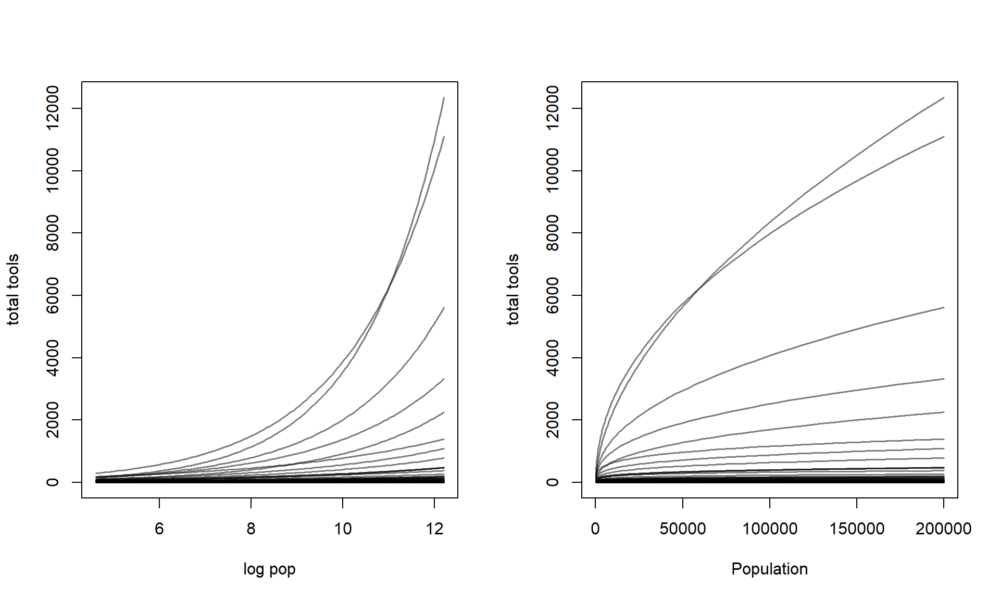
Notice that the left plot we be linear if we logged it. This also shows why it is usually better to log the covariate. We want to imply that there are diminishing returns for adding population at higher values. It means more to add a couple people when the population is very low than compared to when it is high.
We can now go ahead and build our models. We will fit an intercept only model as well as the full model:
dat <- list(
T = d$total_tools,
P = d$P,
cid = d$contact_id
)
# intercept only
m11.9 <- ulam(alist(
T ~ dpois(lambda),
log(lambda) <- a,
a ~ dnorm(3, 0.5)
), data=dat, chains=4, cores=4, log_lik = TRUE)
# full model
m11.10 <- ulam(alist(
T ~ dpois(lambda),
log(lambda) <- a[cid] + b[cid]*P,
a[cid] ~ dnorm(3, 0.5),
b[cid] ~ dnorm(0, 0.2)
), data=dat, chains=4, cores=4, log_lik=TRUE)compare(m11.9, m11.10) WAIC SE dWAIC dSE pWAIC weight
m11.10 84.16892 12.47027 0.00000 NA 6.452128 1.000000e+00
m11.9 141.03615 31.92049 56.86723 33.831 7.840635 4.481654e-13Notice that model m11.10 actually has fewer number of effective parameters. This is surprising since we actually have 3 net new parameters in model m11.10. But, recall that we can really only think about effective parameters and parameter count relationship in simple linear models. We know that parameter values near boundaries produce less overfitting and therefore contribute less to effective number of parameters. This is true about bounded data too. See that a large amount of the bounds are bounded by population not able to be negative, so introducing this covariate actually reduces the number of effective parameters since it limits the parameter space inadvertently.
Let’s go ahead and plot the posterior predictive space:
par(mfrow=c(1,2))
K <- PSIS(m11.10, pointwise = T)$kSome Pareto k values are high (>0.5). Set pointwise=TRUE to inspect individual points.plot(dat$P, dat$T, xlab='log pop (std.)', ylab='tools', col=rangi2,
pch=ifelse(dat$cid == 1, 1, 16), lwd=2, cex=1+normalize(K))
ns <- 100
p_seq <- seq(-1.4, max(dat$P), length.out=ns)
for (i in 1:2){
lambda <- link(m11.10, data=data.frame(P=p_seq, cid=i))
lmu <- colMeans(lambda)
lci <- apply(lambda, 2, PI)
lines(p_seq, lmu, lty=ifelse(i==1,2,1), lwd=1.5)
shade(lci, p_seq, xpd=T)
}
plot(d$population, d$total_tools, xlab='pop', ylab='tools',
col=rangi2, pch=ifelse(dat$cid == 1, 1, 16), lwd=2,
cex=1 + normalize(K))
ns <- 100
p_seq <- seq(-1.4, max(dat$P), length.out=ns)
# Need to convert back to non standard (add mean and multilpy by sd of log pop)
pop_seq <- exp(p_seq*1.53 + 9)
for (i in 1:2){
lambda <- link(m11.10, data=data.frame(P=p_seq, cid=i))
lmu <- colMeans(lambda)
lci <- apply(lambda, 2, PI)
lines(pop_seq, lmu, lty=ifelse(i==1,2,1), lwd=1.5)
shade(lci, pop_seq, xpd=T)
}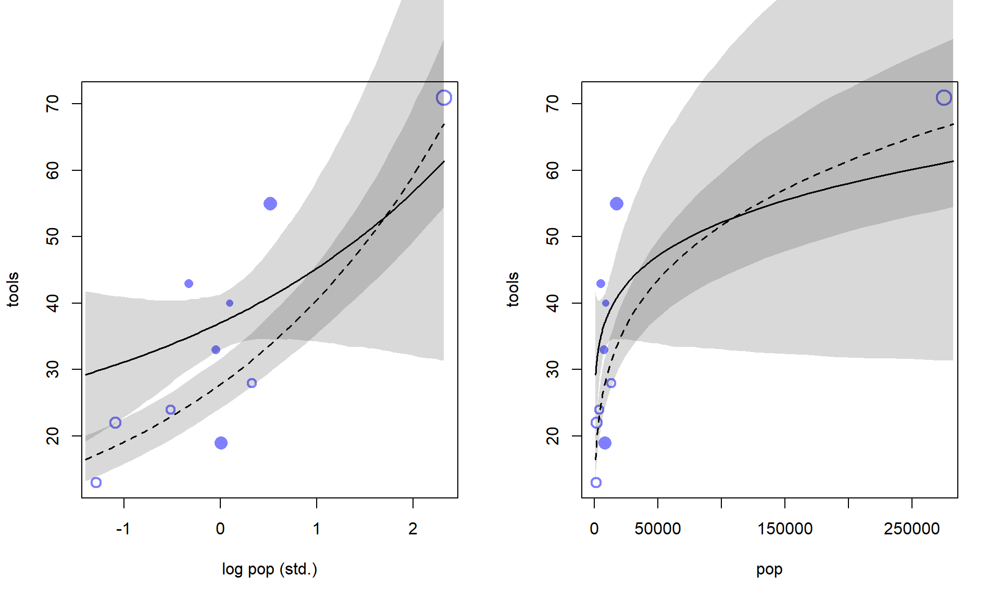
Hawaii is the point in the top right of the right graph. Clearly, because of its very large population, it is highly influential and is therefore contributing to the high \(\hat{k}\).
Now, notice that the trend for high contact societies (solid) is higher than that of low contact societies (dashed). But, notice that the model is allowing that past a certain population size, the relationship flips and low contact becomes higher expected than high contact. Of course, a counterfactual of Hawaii with low contact shouldn’t be higher than current Hawaii.
Also, notice that sine we have given the model the intercept as a free parameter, it can be the case where will will have a non-zero number of expected tools when the population is zero. This can never be possible!
We could combat this by coming up with an ecology informed formula. The implementation is at the top of page 356.
It is sometimes important to allow for extra variation beyond just assuming the variance is equal to \(\lambda\). This would lead us to the Negative Binomial, or sometimes called the Gamma-Poisson. It is really just a Poisson in disguise since it is a mixture of many Poisson distributions (gamma is the mixing distribution and \(\lambda\) is Gamma distributed). It is analagous to the student-t distribution which is a mixture of normals where \(\sigma^2\) follows an inverse gamma.
The parameter \(\lambda\) is the expected number of events, but it can also be thought of as a rate. Implicitly, \(\lambda = \mu/\tau\), the expected number of events \(\mu\) per unit time or distance \(\tau\). We can then redefine our model as:
\[\begin{align} y_i &\sim \text{Poisson}(\lambda_i)\\ \log \lambda_i &= \log \frac{\mu_i}{\tau_i} = \alpha + \beta x_i\\ \end{align}\]
We can then use some log math to show \(\log \lambda_i = \log \mu_i = \log \tau_i + \alpha + \beta x_i\).
Notice when \(\tau_i = 1\) then we are left with the same equation we’ve been using the whole time. But, if \(\tau_i\) does change we are effectively just adding another covariate (\(\log \tau_i\)) to our linear equation. BUT, there is no coefficient for this covariate - it is just a raw addition value.
Our model then effectively becomes:
\[\begin{align} y_i &\sim \text{Poisson}(\mu_i)\\ \log \mu_i &= \log \tau_i + \alpha + \beta x_i\\ \end{align}\]
This \(\log \tau_i\) column is also called the offset.
Let’s simulate some data:
# monastery 1
num_days <- 30
y <- rpois(num_days, 1.5)
# monastery 2 - measured on a weekly basis but lower daily rate
num_weeks <- 4
y_new <- rpois(num_weeks, 0.5*7)
y_all <- c(y, y_new)
exposure <- c(rep(1,30), rep(7,4))
monastery <- c(rep(0,30), rep(1,4))
d <- data.frame(y=y_all, days=exposure, monastery=monastery)
d$log_days <- log(d$days)
m11.12 <- quap(alist(
y ~ dpois(lambda),
log(lambda) <- log_days + a + b*monastery,
a ~ dnorm(0, 1),
b ~ dnorm(0, 1)
), data=d)When we extract the predictions, everything is already on the daily scale so we don’t need to make any adjustments.
post <- extract.samples(m11.12)
lambda_old <- exp(post$a)
lambda_new <- exp(post$a + post$b)
precis(data.frame(lambda_old, lambda_new)) mean sd 5.5% 94.5% histogram
lambda_old 1.8087008 0.2440873 1.440772 2.2173040 ▁▁▃▇▇▃▁▁▁▁
lambda_new 0.3934154 0.1187825 0.234139 0.6030955 ▁▃▇▅▂▁▁▁▁▁The parameters are about right with what we simulated.
When more than two types of events are possible, and the probability of each type of event is constant and unordered, then the maximum entropy distribution is a multinomial distribution. The pdf is defined as:
\[P(y_1, \dots. y_K|n, p_1, \dots, p_K) = \frac{n!}{\prod_i y_i!} \prod^K_{i=1}p_i^{y_i}\]
Where \(K\) is the unique number of events, and \(y_i\) is the number of events of type \(i\) out of \(n\) trials. A model with this likelihood is sometimes referred to as categorical regression. There are two approachs we are going to use to specify the model. The explicit approach uses the multinomial logit, aka the softmax as the link:
\[P(k|s_1, \dots, s_K) = \frac{\exp(s_k)}{\sum_{i=1}^K\exp(s_i)}\] The scores here are of course continuous. For multinomial logistic regression we need \(K-1\) models. One of the outcome variables will be our pivot variable. This of course keeps us from having an overdetermined system of equations.
Let’s simulate career choices for young adults:
N <- 500
income <- c(1,2,5)
score <- 0.5*income
p <- softmax(score)
career <- rep(NA, N)
set.seed(34302)
for (i in 1:N) career[i] <- sample(1:3, size=1, prob=p)Let’s now fit the model with stan code:
code_m11.13 <- "
data{
int N;
int K;
array[N] int career;
vector[K] career_income;
}
parameters{
vector[K-1] a; // intercepts
real<lower=0> b; // association of income with choice
}
model{
vector[K] p;
vector[K] s;
a ~ normal(0, 1);
b ~ normal(0, 0.5);
s[1] = a[1] + b*career_income[1];
s[2] = a[2] + b*career_income[2];
s[3] = 0; // pivot
p = softmax(s);
career ~ categorical(p);
}
"
dat_list <- list(N=N, K=3, career=career, career_income=income)
m11.13 <- stan(model_code=code_m11.13, data=dat_list, chains=4, cores=4)precis(m11.13, depth=2) mean sd 5.5% 94.5% rhat ess_bulk
a[1] -2.1554217 0.1984598 -2.480383450 -1.8546568 1.004042 421.8194
a[2] -1.8225057 0.2829974 -2.366039700 -1.4588273 1.004365 359.6091
b 0.1470934 0.1283186 0.007986523 0.3917914 1.005056 295.8366It is clear that b is positive, but we don’t know how it actually effects the outcome. This is why we always need to convert to the outcome scale.
Let’s make a counterfactual - what would happen if we double the income of a career, specifically career 2:
post <- extract.samples(m11.13)
s1 <- with(post, a[,1] + b*income[1])
s2_orig <- with(post, a[,2] + b*income[2])
s2_new <- with(post, a[,2] + b*income[2]*2)
p_orig <- vapply(1:length(post$b), \(x) softmax(s1[x], s2_orig[x], 0), numeric(3)) |> t()
p_new <- vapply(1:length(post$b), \(x) softmax(s1[x], s2_new[x], 0), numeric(3)) |> t()
precis(p_new[,2] - p_orig[,2]) mean sd 5.5% 94.5%
p_new...2....p_orig...2. 0.04686487 0.04567787 0.002196679 0.1324887
histogram
p_new...2....p_orig...2. ▇▃▂▂▁▁▁▁▁▁▁▁▁▁So about a 5 point increase for doubling the income. Notice, that value is conditional on comparing to the other careers.
Suppose now that we want to incorporate family income into the model. The difference here is that the predictor variable (family income), must have the same value for each linear model.
N <- 500
family_income <- runif(N)
b <- c(-2,0,2)
career <- rep(NA, N)
for (i in 1:N){
score <- 0.5*(1:3) + b*family_income[i]
p <- softmax(score)
career[i] <- sample(1:3, size=1, prob=p)
}Now the stan code:
code_m11.14 <- "
data{
int N;
int K;
array[N] int career;
vector[N] family_income;
}
parameters{
vector[K-1] a; // intercepts
vector[K-1] b; // coeff for family income
}
model{
vector[K] p;
vector[K] s;
a ~ normal(0, 1.5);
b ~ normal(0, 1);
for (i in 1:N){
for (j in 1:(K-1)) s[j] = a[j] + b[j] * family_income[i];
s[K] = 0; // pivot
p = softmax(s);
career[i] ~ categorical(p);
}
}
"
dat_list <- list(N=N, K=3, career=career, family_income=family_income)
m11.14 <- stan(model_code=code_m11.14, data=dat_list, chains=4, cores=4)precis(m11.14, depth=2) mean sd 5.5% 94.5% rhat ess_bulk
a[1] -1.5135065 0.2933859 -1.9788949 -1.0536905 1.001381 981.9375
a[2] -0.4682885 0.2011464 -0.7825174 -0.1351792 1.003178 844.4821
b[1] -2.2620815 0.5787784 -3.2184208 -1.3681182 1.003879 1002.9225
b[2] -1.8617391 0.3853975 -2.5155083 -1.2617806 1.003401 878.0378Again, we can’t look at those coefficients in a vacuum. We need to convert to the outcome scale.
Let’s start with a simple binomial problem, since a binomial is a special case of the multinomial:
data("UCBadmit")
d <- UCBadmit
m_binom <- quap(alist(
admit ~ dbinom(applications, p),
logit(p) <- a,
a ~ dnorm(0, 1.5)
), data=d)
# Poisson model of overall admission rate and rejection rate
dat <- list(admit=d$admit, rej=d$reject)
m_pois <- ulam(alist(
admit ~ dpois(lambda1),
rej ~ dpois(lambda2),
log(lambda1) <- a1,
log(lambda2) <- a2,
c(a1, a2) ~ dnorm(0, 1.5)
), data=dat, chains=4, cores=4)Let’s look at the posterior means for simplicity:
inv_logit(coef(m_binom)) a
0.3878044 k <- coef(m_pois)
a1 <- k['a1']; a2 <- k['a2']
exp(a1)/(exp(a2) + exp(a1)) # softmax a1
0.3877135 If we use the logit link for the mean of a Poisson, that would imply that we want the mean of the Poisson, \(\lambda\), to be between 0 and 1. We might use this for any process that we have prior knowledge that on average produces less than 1 unit per time period. Could be some high half life decaying element where we only see emissions at very low rates.
For this question we will look at Bald Eagles and their attempts to steal other eagle’s food sources. We want to model the probability of a successful stealing attempt from a “victim” eagle.
library(MASS)
Attaching package: 'MASS'The following object is masked from 'package:dplyr':
selectdata("eagles")
d <- eagles
d$P_ind <- (as.character(d$P) == 'L') |> as.integer()
d$A_ind <- (as.character(d$A) == 'A') |> as.integer()
d$V_ind <- (as.character(d$V) == 'L') |> as.integer()
str(d)'data.frame': 8 obs. of 8 variables:
$ y : int 17 29 17 20 1 15 0 1
$ n : int 24 29 27 20 12 16 28 4
$ P : Factor w/ 2 levels "L","S": 1 1 1 1 2 2 2 2
$ A : Factor w/ 2 levels "A","I": 1 1 2 2 1 1 2 2
$ V : Factor w/ 2 levels "L","S": 1 2 1 2 1 2 1 2
$ P_ind: int 1 1 1 1 0 0 0 0
$ A_ind: int 1 1 0 0 1 1 0 0
$ V_ind: int 1 0 1 0 1 0 1 0Here \(y\) is the number of successful attempts out of \(n\) trials. \(P\) is a dummy variable indicating if the thief eagle has a large body size. \(V\) is the same, but for the victim eagle. \(A\) is an indicator for if the thief eagle is an adult.
Let’s fit a simply Binomial GLM using the ulam and quap inference methods.
mod_list <- alist(
y ~ dbinom(n, p),
logit(p) <- alpha + b_P*P_ind + b_A*A_ind + b_V*V_ind,
alpha ~ dnorm(0,1.5),
c(b_P, b_A, b_V) ~ dnorm(0,0.5)
)
mh5_q <- quap(mod_list, data=d)
mh5_u <- ulam(mod_list, data=d |> as.list(), cores=4, chains=4)mh5_q_samps <- extract.samples(mh5_q) |> as.data.frame()
mh5_u_samps <- extract.samples(mh5_u) |> as.data.frame()
par(mfrow=c(2,2))
for (i in colnames(mh5_q_samps)){
dens(mh5_q_samps[[i]], main=paste0('Coef ', i),
col='darkblue', lwd=2)
dens(mh5_u_samps[[i]], add=T, col='darkred', lwd=2)
}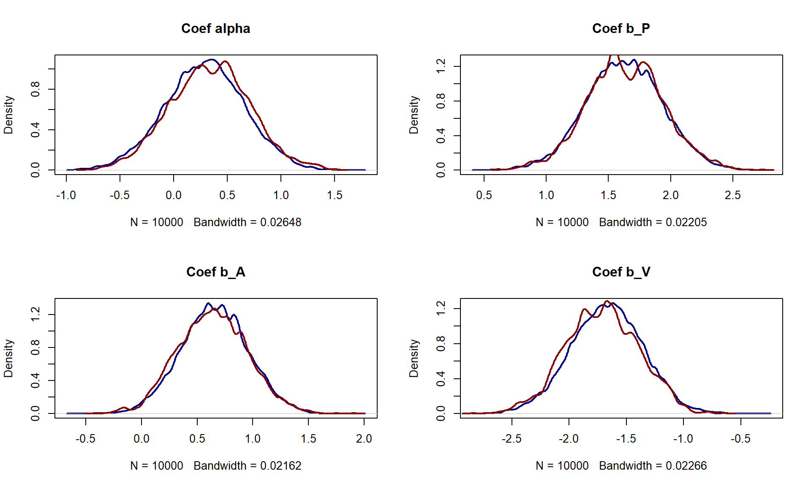
It looks like they are actually the same. We are okay to use quap for this problem.
Let’s look at the output from quap:
precis(mh5_q) mean sd 5.5% 94.5%
alpha 0.2937859 0.3681383 -0.2945702 0.882142
b_P 1.6209694 0.3063632 1.1313419 2.110597
b_A 0.6517357 0.3054233 0.1636103 1.139861
b_V -1.6731111 0.3191368 -2.1831534 -1.163069It looks like \(P\) and \(V\) have about the same effect as each other, but negate each other. \(A\) is a positive effect - which makes sense since we would expect the thief being an adult to increase the success rate.
Let’s look at the posterior predictive, we’ll first look at the rate:
postcheck(mh5_q)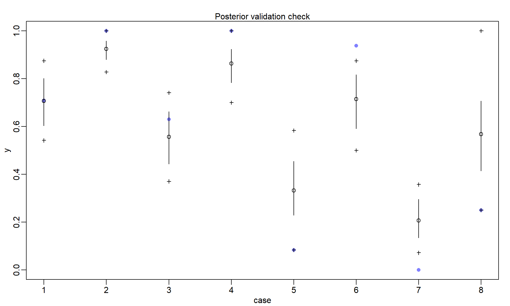
Instead of the rates, let’s look at the simulated counts:
a <- sim(mh5_q)
a_pi <- apply(a, 2, PI)
plot(colMeans(a), ylim=range(a_pi, d$y), ylab='Expected Counts')
points(d$y, col=rangi2, pch=16)
rep(1:8) |> arrows(x0=_, y0=a_pi[2,], y1=a_pi[1,], code=0, lwd=2)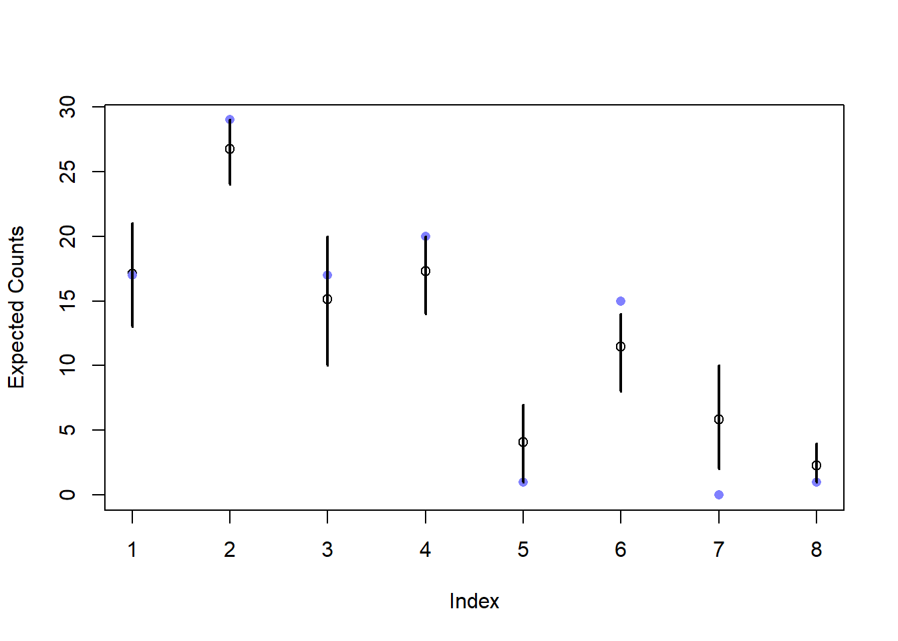
The proportion plot and the counts plot tell a similar story. In fact, if the pluses overlap with the actual value in the first plot, they are almost guaranteed to in the second. This is becuase they are the same quantities just with different normalizations. What the second plot helps to show is that we get worse predictions as the sample size increases, which is something you wouldn’t immediately see in the first plot.
Let’s add an interaction to the model between the thief’s size and age:
mod_list <- alist(
y ~ dbinom(n, p),
logit(p) <- alpha + b_P*P_ind + b_A*A_ind + b_V*V_ind + b_PA*P_ind*A_ind,
alpha ~ dnorm(0,1.5),
c(b_P, b_A, b_V, b_PA) ~ dnorm(0,0.5)
)
mh5_q2 <- quap(mod_list, data=d)
precis(mh5_q2) mean sd 5.5% 94.5%
alpha 0.3248665 0.3692523 -0.26527000 0.9150030
b_P 1.5393852 0.3243976 1.02093512 2.0578352
b_A 0.5489449 0.3340236 0.01511058 1.0827792
b_V -1.6860254 0.3205108 -2.19826357 -1.1737873
b_PA 0.2933371 0.3807133 -0.31511624 0.9017905Let’s see how much it helps:
compare(mh5_q, mh5_q2, func=PSIS)Some Pareto k values are very high (>1). Set pointwise=TRUE to inspect individual points.
Some Pareto k values are very high (>1). Set pointwise=TRUE to inspect individual points. PSIS SE dPSIS dSE pPSIS weight
mh5_q 60.83718 12.89540 0.000000 NA 8.969411 0.8667644
mh5_q2 64.58248 14.52573 3.745297 2.0066 10.661208 0.1332356compare(mh5_q, mh5_q2, func=WAIC) WAIC SE dWAIC dSE pWAIC weight
mh5_q 59.60373 11.88429 0.000000 NA 8.232936 0.8604066
mh5_q2 63.24107 12.59368 3.637342 1.946512 10.118884 0.1395934Looks like the non-interaction model is slightly better, but the difference between the two models is not significant.
Let’s look at some salamander data:
data(salamanders)
d <- salamanders
str(d)'data.frame': 47 obs. of 4 variables:
$ SITE : int 1 2 3 4 5 6 7 8 9 10 ...
$ SALAMAN : int 13 11 11 9 8 7 6 6 5 5 ...
$ PCTCOVER : int 85 86 90 88 89 83 83 91 88 90 ...
$ FORESTAGE: int 316 88 548 64 43 368 200 71 42 551 ...Here SALAMANDER is the number of salamanders in one of the 47 49-sq meter plots. PCTCOVER is the percent ground cover and FORESTAGE is the age of the forest.
Let’s model the relationship between forest cover and salamander density. We’ll check if quap or ulam are much different.
mod_list <- alist(
SALAMAN ~ dpois(lam),
log(lam) <- alpha + b_P*PCTCOVER,
alpha ~ dnorm(0,0.5),
b_P ~ dnorm(0,0.5)
)
mh3_q <- quap(mod_list, data=d)
mh3_u <- ulam(mod_list, data=d |> as.list(), cores=4, chains=4)mh3_q_samps <- extract.samples(mh3_q) |> as.data.frame()
mh3_u_samps <- extract.samples(mh3_u) |> as.data.frame()
par(mfrow=c(1,2))
for (i in names(mh3_q_samps)){
dens(mh3_q_samps[[i]], lwd=2, main=paste0('Coef: ', i))
dens(mh3_u_samps[[i]], lwd=2, col=2, add=T)
}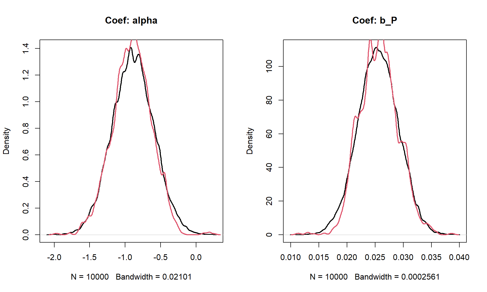
As we saw with the previous problem, they sit right on top of each other so we are good to use quap.
Let’s look at the expected counts:
a <- link(mh3_q)
a_pi <- apply(a, 2, PI)
plot(NULL, xlim=range(d$PCTCOVER), ylim=range(0,6, a_pi), xlab='% Cover', ylab='Expected Salamanders')
abline(v=d$PCTCOVER, col='lightgrey')
points(d$PCTCOVER, colMeans(a), pch=16, col=rangi2, )
points(d$PCTCOVER, d$SALAMAN, pch=16)
arrows(x0=d$PCTCOVER, y0=a_pi[1,], y1=a_pi[2,], code=0)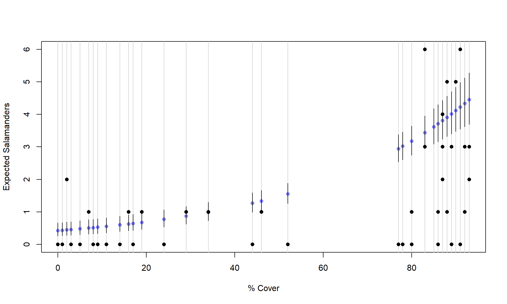
The model seems to do a good job for low percent cover, but not so well when we get to the upper end.
Let’s try a model with FORESTAGE:
d$FORESTAGE_std <- (d$FORESTAGE - mean(d$FORESTAGE)) / sd(d$FORESTAGE)
mod_list <- alist(
SALAMAN ~ dpois(lam),
log(lam) <- alpha + b_P*PCTCOVER + b_F*FORESTAGE_std,
alpha ~ dnorm(0,0.5),
c(b_P, b_F) ~ dnorm(0,1)
)
mh3_q2 <- quap(mod_list, data=d)
mod_list <- alist(
SALAMAN ~ dpois(lam),
log(lam) <- alpha + b_P*PCTCOVER + b_F*FORESTAGE_std + b_FP*PCTCOVER*FORESTAGE_std,
alpha ~ dnorm(0,0.5),
c(b_P, b_F, b_FP) ~ dnorm(0,0.5)
)
mh3_q3 <- ulam(mod_list, data=d |> as.list(), cores=4, chains=4, log_lik=T)precis(mh3_q2) mean sd 5.5% 94.5%
alpha -0.85365750 0.302846130 -1.33766411 -0.36965089
b_P 0.02487627 0.003870855 0.01868989 0.03106264
b_F 0.03610397 0.094204362 -0.11445279 0.18666074precis(mh3_q3) mean sd 5.5% 94.5% rhat ess_bulk
alpha -0.44589018 0.5739419 -1.25027825 0.377794000 1.604949 6.925078
b_FP -0.29881593 0.5102211 -1.18230000 0.001925988 1.625923 6.715455
b_F 0.06118047 0.6772124 -0.95204700 0.964327830 1.552706 7.252268
b_P 0.13829811 0.1992744 0.01659199 0.485689220 1.637206 6.633157From looking at the coefficients, we see that FORESTAGE doesn’t add much as all.
cor(d$PCTCOVER, d$FORESTAGE)[1] 0.62546It looks like they are pretty highly correlated.
compare(mh3_q, mh3_q2, mh3_q3, func=PSIS)Warning in compare(mh3_q, mh3_q2, mh3_q3, func = PSIS): Not all model fits of same class.
This is usually a bad idea, because it implies they were fit by different algorithms.
Check yourself, before you wreck yourself.Some Pareto k values are very high (>1). Set pointwise=TRUE to inspect individual points. PSIS SE dPSIS dSE pPSIS
mh3_q 2.147533e+02 2.594918e+01 0.000000e+00 NA 4.426192e+00
mh3_q2 2.178339e+02 2.621609e+01 3.080571e+00 1.624266e+00 6.408210e+00
mh3_q3 8.592590e+52 8.433606e+52 8.592590e+52 8.433606e+52 4.296295e+52
weight
mh3_q 0.8235062
mh3_q2 0.1764938
mh3_q3 0.0000000Looks like the second and third model does not add much at all. This probably has to do with FORESTAGE containing much of the same information that PCTCOVER has.
Let’s look at how brain size is associated with social learning:
data("Primates301")
d <- Primates301
d <- d[, c('social_learning', 'brain', 'research_effort')]
d <- na.omit(d)
d$l_brain <- log(d$brain)
d$l_research <- log(d$research_effort)We’ll use a poisson to model social_learning from log(brain size):
mh6_q <- quap(alist(
social_learning ~ dpois(lambda),
log(lambda) <- alpha + b_b*l_brain,
alpha ~ dnorm(0,1),
b_b ~ dnorm(0,0.5)
), data=d)
precis(mh6_q) mean sd 5.5% 94.5%
alpha -8.598632 0.30603286 -9.087731 -8.109532
b_b 2.119080 0.05709355 2.027833 2.210327Makes sense - looks like a larger brain is associated with more social learning.
Now bring research effort into the mix:
mh6_q2 <- quap(alist(
social_learning ~ dpois(lambda),
log(lambda) <- alpha + b_b*l_brain + b_r*l_research,
alpha ~ dnorm(0,1),
c(b_b, b_r) ~ dnorm(0,0.5)
), data=d)
precis(mh6_q2) mean sd 5.5% 94.5%
alpha -7.1180007 0.27230390 -7.5531949 -6.6828065
b_b 0.2846506 0.06389931 0.1825272 0.3867741
b_r 1.5817757 0.06660479 1.4753284 1.6882230Wow, it looks like in the presence of research effort, the effect of brain size decreases.
Let’s think about this causally. It makes sense that there might be more research effort, especially in the context of social learning, if the primate species in question has a larger brain size. This is what I expect the DAG to look like:
dag_m8.1 <- dagitty("dag{
B -> R -> S
B -> S
}")
coordinates(dag_m8.1) <- list(x=c('S'=1, 'B'=0, 'R'=0.5),
y=c('S'=0, 'B'=0, 'R'=-1))
drawdag(dag_m8.1)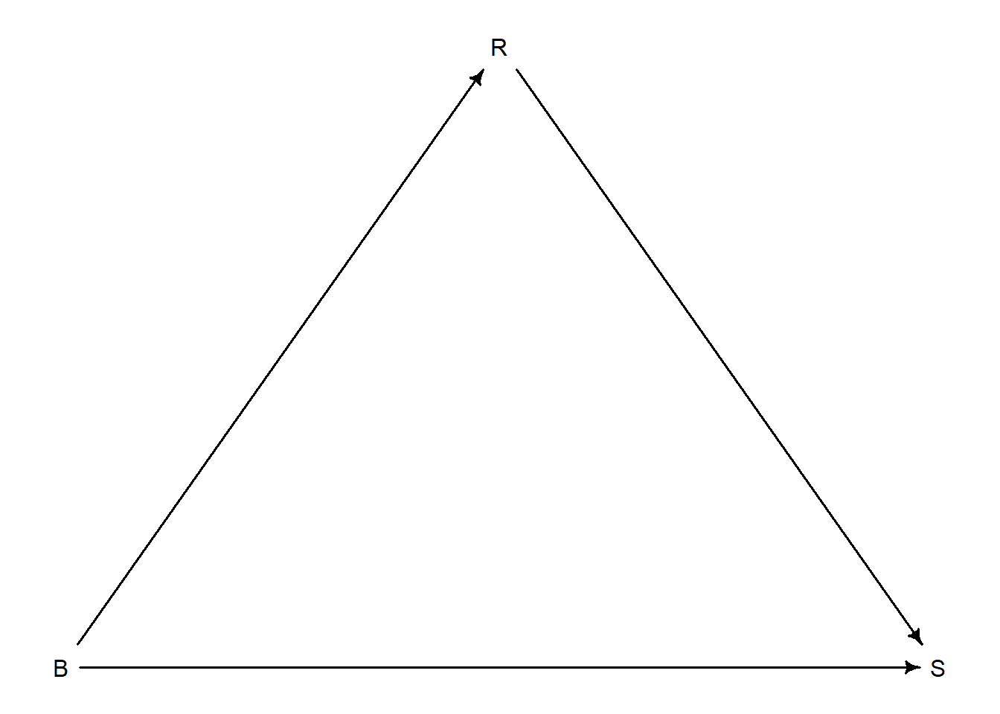
where B is brain size, R is research effort, and S is social learning. Notice that in the DAG their is a direct effect of brain size on social learning, but there is also a mediation pathway where brain size is mediated through research effort.